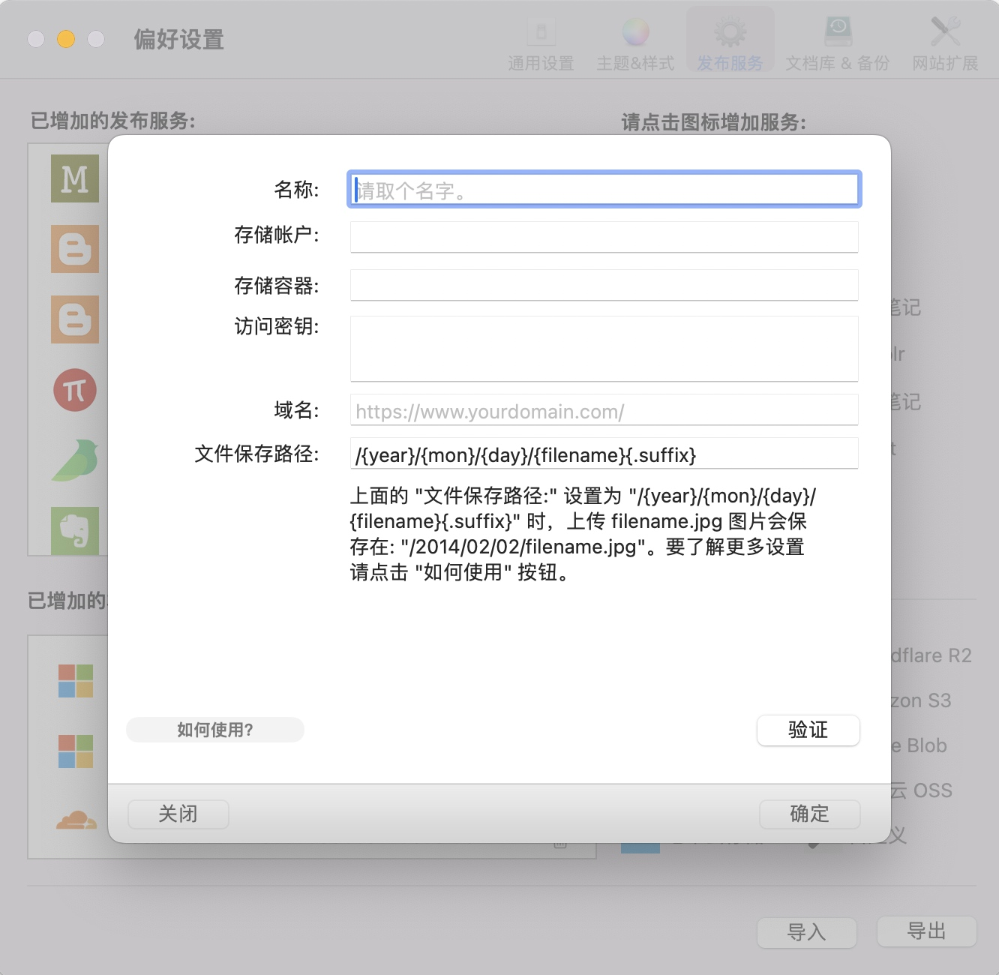
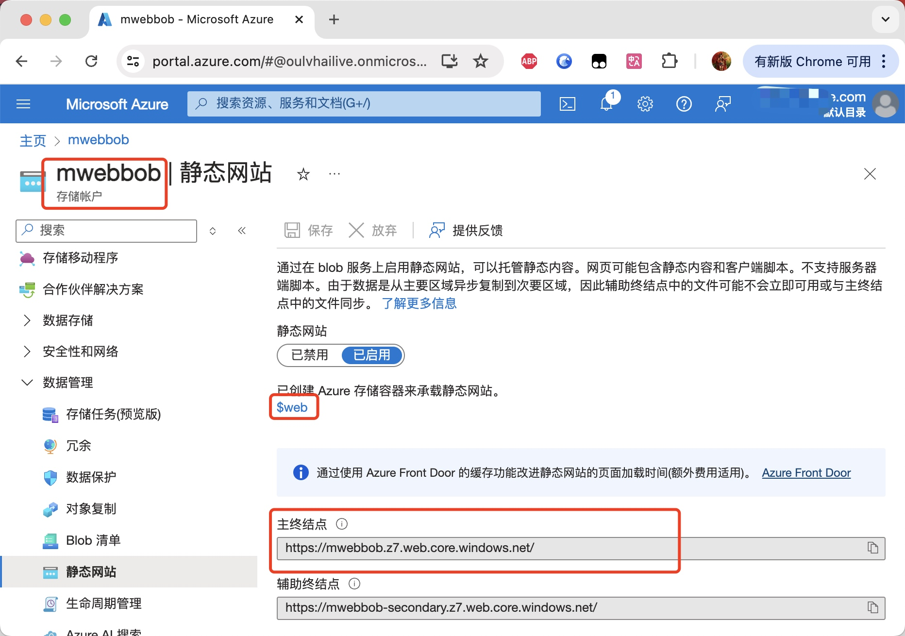
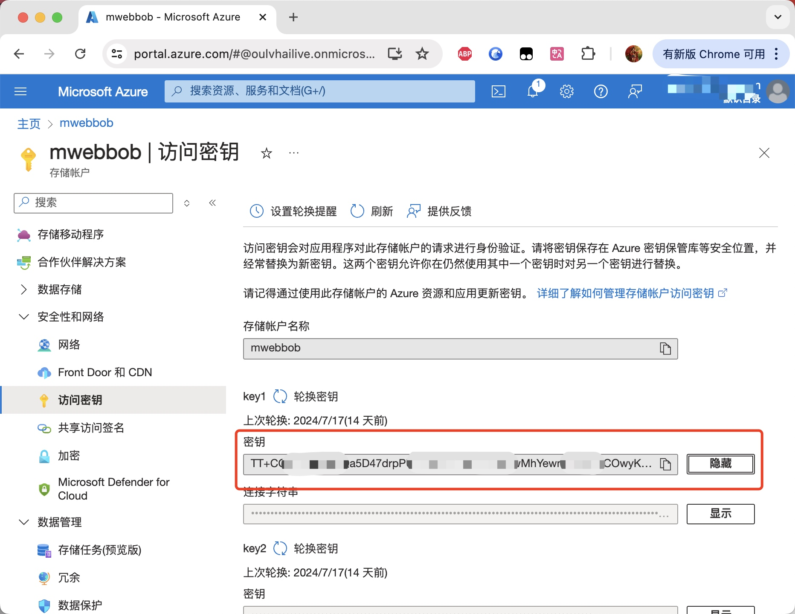
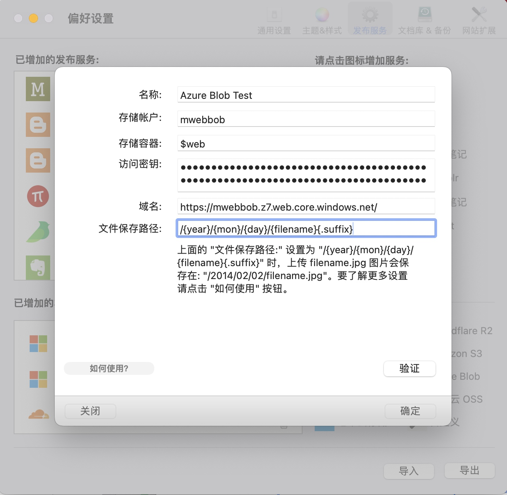

把 Markdown 文档中的图片一键上传到 Azure Blob
在 MWeb 中，上传图片有两种方式。一种是先上传，再把 Markdown 语法插入到文档中；另一种是写文档时，图片就使用拖拽或者复制粘贴的方式插入到文档中，图片会存储在本地，文档写完后，再一键上传。这两种方式的详细使用方法，可以参考文章：MWeb 的图片上传服务介绍。
知道了图片上传方式后，下面就是详细说明如何配置 Azure Blob 图片上传服务，配置好之后，就能非常方便的把 Markdown 文档中的图片上传到 Azure Blob 了。
首先要去 “设置 - 发布服务” 中，新增 Azure Blob 图片上传服务，这时会显示如下图的资料填写界面。下图是 Mac 版 MWeb 的填写界面，iPad/iPhone 平台的也是一样的。

下面将详细说明各个填写项目。
名称： 名称可以填入自己想要的名称，能识别这个图片上传服务就可以了。
存储帐户： 和 存储容器：，这两个可以在 Azure 的管理界面中找到，如果你没有存储帐户，可以先创建一个。创建了存储帐户后，就可以在存储帐户里面创建存储容器了。Azure Blob 有一个快速配置 Blob 里的文件为静态网站的方法，就是创建了存储帐户后，进入这个存储帐户，选择 “数据管理 - 静态网站”，点击 “启用” 按钮就可以了。 Azure 会自动在这个存储帐户生成一个名为 $web 的存储容器，并且提供一个临时域名 https://mwebbob.z7.web.core.windows.net/，如下图：

访问密钥： 是跟存储帐户绑定的，进入存储帐户后，选择 “安全性和网络 - 访问密钥” 就可以找到访问密钥了，如下图所示：

域名： 如果有为这个存储桶绑定了域名，请填入自己的域名。如果没有，可以使用上面说到的静态网站的临时域名，我这里是：https://mwebbob.z7.web.core.windows.net/。
文件保存路径： 如非必要，请不要改动，如果你要改动，应该也知道是什么意思了。
以下是填写完整后的截图：
